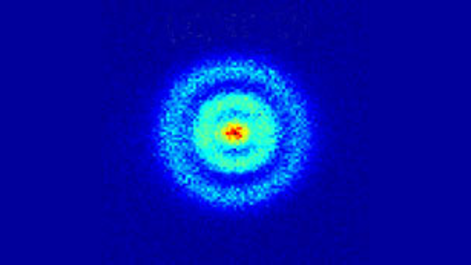
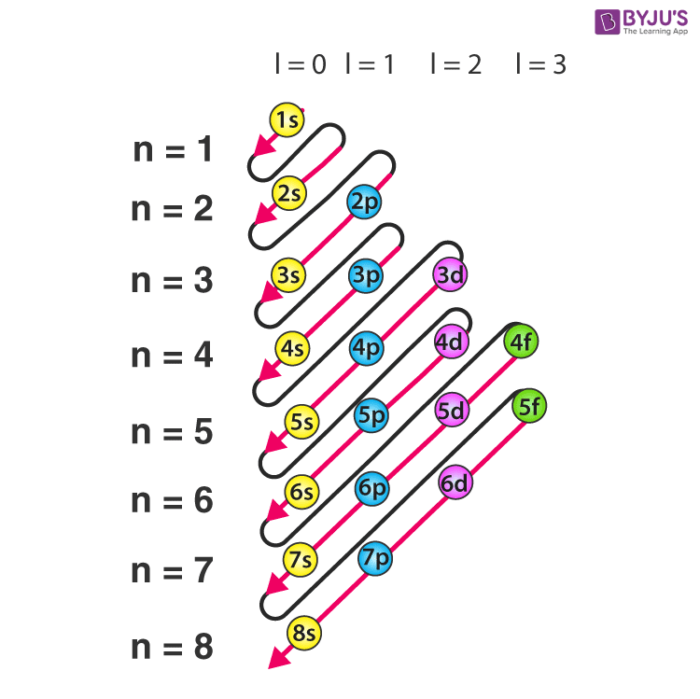

The Electron
With its negative charge, the electron is what allows so much complexity inside the atom. Let's learn more about it!
Where It's Found
The electrons are found in the well-named electron cloud. Here is where the orbital are. Contrary to popular belief, the electron orbitals are somewhere where the electrons reside, not the actual trajectory of the electrons. It's like a bush where there's a berry, you don't know where the berry is just that's in the bush.
Orbitals
The Electron orbitals are inside the previously mentioned cloud. They each have a specific shape, allowing for more complexity as the levels stack on. These are what allow us to have so many complex molecules and allow the beautiful symphony that is the periodic table.
Electron Configuration
Electron Configuration is the order in which electrons are arranged depending on the strength of their charge and attraction. It uses the previously mentioned orbitals to determine the order and importance of where the placement should be.